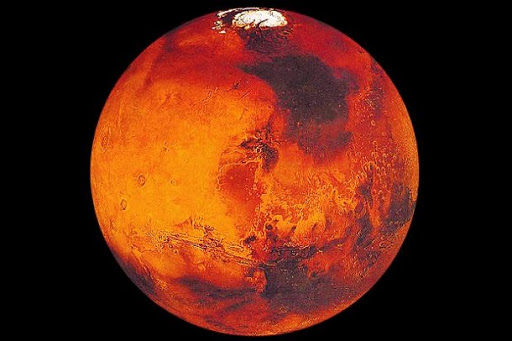
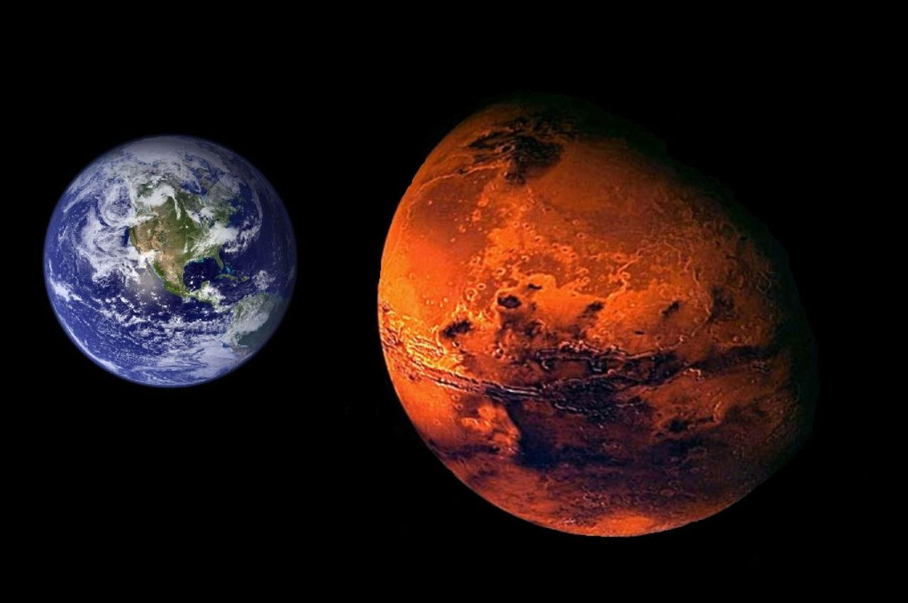

Марс — четвёртая по удалённости от Солнца и седьмая по размерам планета Солнечной системы; масса планеты составляет 10,7 % массы Земли. Названа в честь Марса — древнеримского бога войны, соответствующего древнегреческому Аресу.
Иногда Марс называют «красной планетой» из-за красноватого оттенка поверхности, придаваемого ей минералом маггемитом — γ-оксидом железа(III). Марс — планета земной группы с разреженной атмосферой (давление на поверхности в 160 раз меньше земного).
Особенностями поверхностного рельефа Марса можно считать ударные кратеры наподобие лунных, а также вулканы, долины, пустыни и полярные ледниковые шапки наподобие земных. У Марса есть два естественных спутника — Фобос и Деймос (в переводе с древнегреческого — «страх» и «ужас», имена двух сыновей Ареса, сопровождавших его в бою), которые относительно малы (Фобос — 26,8×22,4×18,4 км, Деймос — 15×12,2×10,4 км)и имеют неправильную форму. Начиная с 1960-х годов непосредственным исследованием Марса занимается весь мир. На сегодняшний день, после Земли, Марс — самая подробно изученная планета Солнечной системы.
 